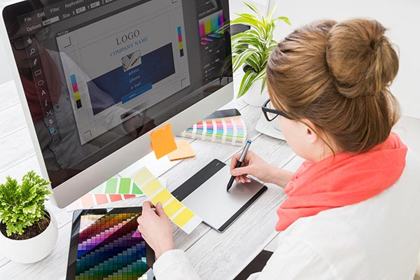

В широкому сенсі web-дизайн — це процес створення веб-сайтів, що включає в себе технічні аспекти розробки, структурування інформації та проєктування візуальної оболонки ресурсу. Веб-дизайнер — це ІТ-фахівець, відповідальний за те, як буде виглядати та сприйматись відвідувачем сайт або застосунок. Його головна задача — оформити ресурс так, щоб користувач отримав те, за чим «прийшов» на веб-сторінку: без проблем здійснив замовлення, швидко знайшов потрібну інформацію, написав повідомлення, прочитав статтю.
Якщо дуже коротко, то робота web-дизайнера полягає в тому, щоб за допомогою спеціалізованих програм розробляти макети зовнішнього вигляду веб-сторінок та передавати їх програмістам. Девелопери, в свою чергу, перетворюють макети у код — так і з’являється сайт. Професійний веб-дизайнер повинен мати творче мислення, володіти графічними редакторами, а ще — хоча б базово розбиратися в програмуванні та розуміти як його проєкт буде реалізовано з технічної сторони. Тобто якісний веб-дизайн — це не лише об’єднані в єдине ціле фон, зображення, анімація, іконки, шрифти, а ще й їх коректне відображення у всіх популярних браузерах на пристроях з різною роздільною здатністю екрану та ОС.
